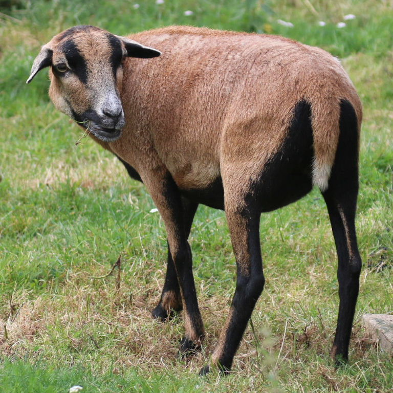

Kamerun koyunu, Batı Afrika kökenli, kısa tüylü ve dayanıklı bir koyun ırkıdır; kahverengi gövdesi ile siyah baş ve karın altı rengiyle dikkat çeker, koçları güçlü boynuzlu ve yeleli, dişileri ise boynuzsuzdur; mevsimsel olarak tüylerini döktüğü için kırkıma gerek duyulmaz, bu da bakımını kolaylaştırır; koçlar genellikle 50–70 kg, koyunlar ise 35–50 kg ağırlığa ulaşır; güçlü bağışıklığı, zor iklim koşullarına uyumu ve 8 ayda bir doğum yapabilmesi sayesinde et verimi yüksek ve ekonomik bir yetiştiricilik sağlar, bu nedenle hem küçük hem de orta ölçekli çiftliklerde tercih edilen bir türdür.